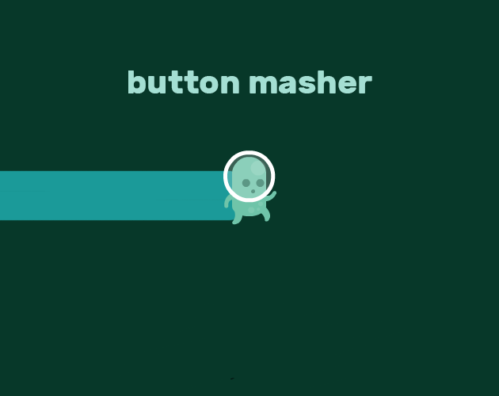

One of my more successful projects — 3rd place in a game jam, and 1st for game design. The weakest part was visual consistency, since I leaned on free assets that did not blend together well. The design itself held up, which is what the placement and the feedback reflected.
I set out to build an auto-runner with idle elements, where the character ran without any input. Getting that autonomous run working turned out to be the problem, and the fix became the feature: auto-run turned into a boost instead. That added a skill-based element and gave players real control.
The goal from here is to turn it into a browser-based multiplayer game. It would widen the audience, and it is a good excuse to learn networking properly.
gitHub